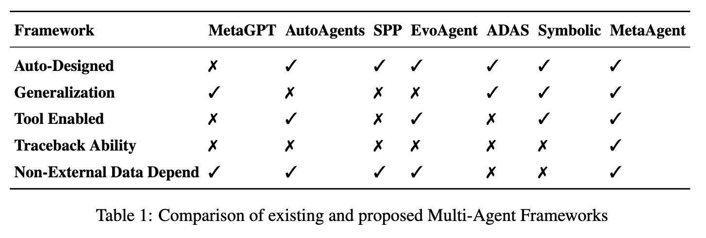
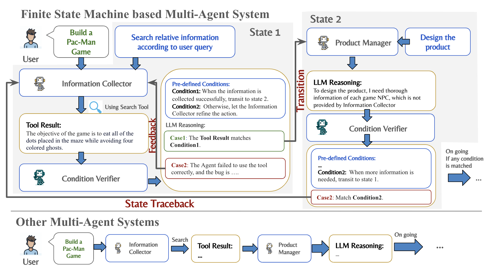

🎆 News
- [2024/10/17] Release the first version of MetaAgent.
👀 Overview

MetaAgent is a framework that can be used to build your own multi-agent system automatically by one line of prompt.
The Multi-Agent System (MAS) is based on the Finite State Machine (FSM), which is shown in the figure.
Auto-generation of Multi-Agent System
- Given a general task description (e.g., Build a multi-agent system for software development), MetaAgent can automatically generate a multi-agent system with several agents.
- Unlike other auto-generation frameworks, MetaAgent can generate a multi-agent system without external training data.
- The generated multi-agent system is also able to solve every case of the given task domain.
Why Finite State Machine?

The finite state machine has several features:
- 🔧 Tool Enabled: The agent can use tools to help it complete tasks.
- 🔄 State Traceback: The agent can traceback the state of the system when the task fails.
Additional Custom Content
Add any custom content you wish to display here.